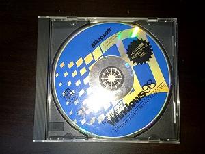
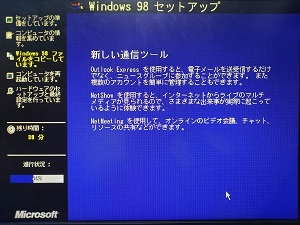
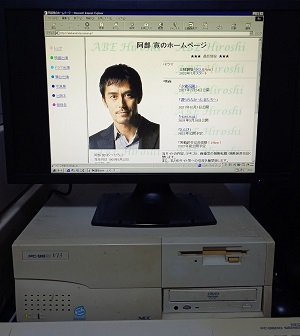

PC-9821 V13にWindows98をインストールする

我が家に唯一あるデスクトップの9821であるV13が棚に仕舞ってあったので何故かもったいないと思い、
Windows98をインストールしてみることにしました。
(特殊なインストール方法になってしまいましたが(;^ω^))
用意するもの
・Windows98がインストールできるPC-98(今回はV13を使用しました)
・Windows98 インストールCD(PC-98対応のもの)
・フロッピーディスク1枚(但し98フォーマットであること)
・適当なWindowsのパソコン１台
まず最初に起動ディスクを作成します。(純正の起動ディスクが無い場合)
こちらのサイト
から「mkw9ximg.7z」をダウンロード、7zipで解凍してください。
そうすると展開されたファイルの中にReadmeがありますから、それを参考に起動ディスクを作成してください(98フォーマットのフロッピーに作成してください)。
起動ディスクが作成出来たら、その中に「format」「fdisk」「xcopy」(自力で探してきてください)をそれぞれ入れてください。
その作業ができたらいよいよPC-98の出番です。PC-98を先ほど作成した起動ディスクで起動させてください。
そうするとdosの画面に「Windows98 起動～～～」という文字が出てきますから、そこにある選択肢の中から「コマンドプロンプト」を選択してください。
dosが表示されたらformatでHDDをフォーマット、xcopyで起動ディスクを全部HDDにコピーしてください。
(エラー「SU0013」回避の為。)
コピーが完了したら起動ディスクを抜いて再起動してください。
再起動後にまた「Windows98～～～」の画面が表示されるので、CDDの種類を選択後、画面の指示に従ってインストールしてください。

数回の再起動の後、懐かしの起動音が鳴ったらインストール完了です。
（インストール後、当然ながら起動ディスクのファイルが残っているので、適宜(起動ディスクの)config.sysを編集しておいたほうがいいかもしれません）
おまけ インターネットに接続して「あの俳優」のホームページを開いてみた

PC-98でも安定の爆速ぶりである。
ホームページに戻る